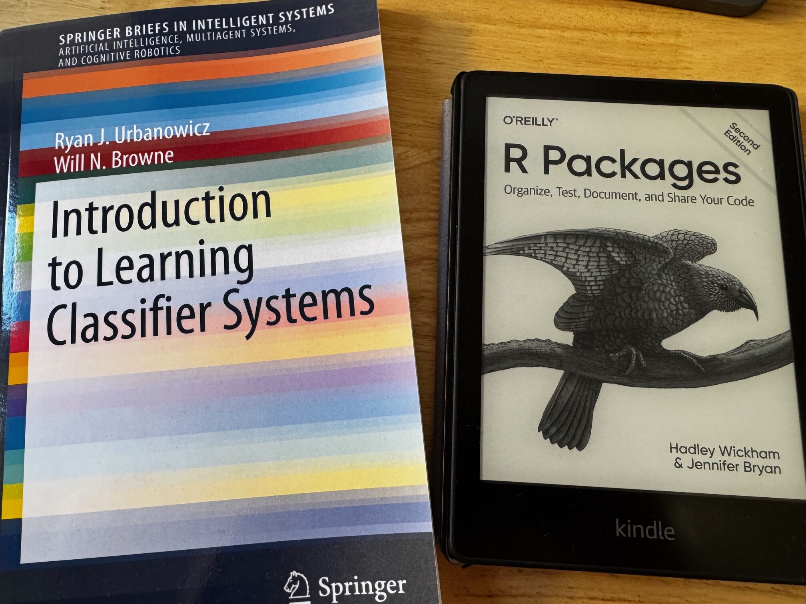
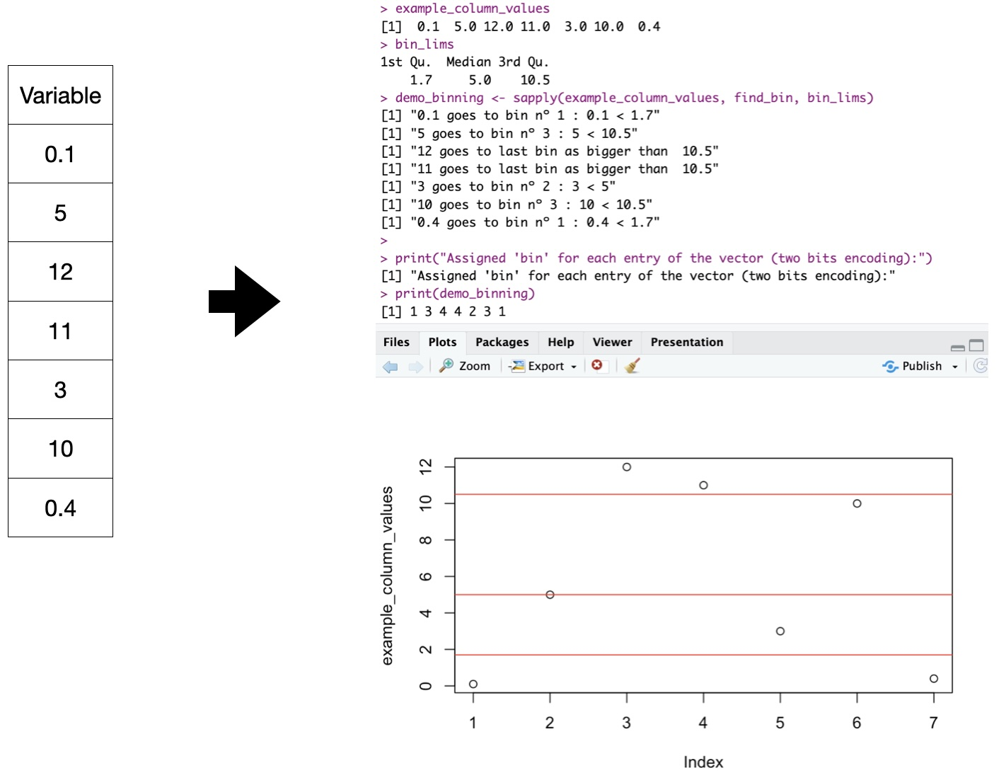
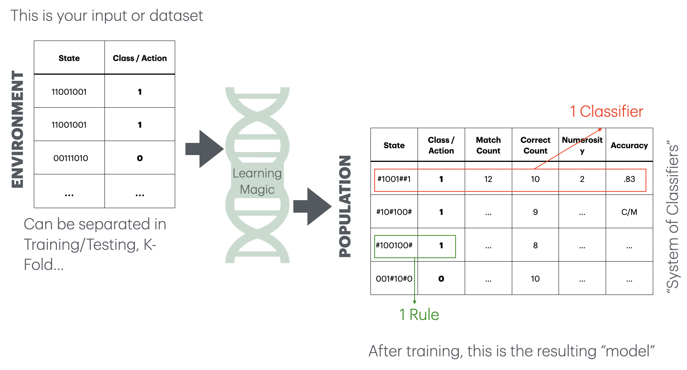
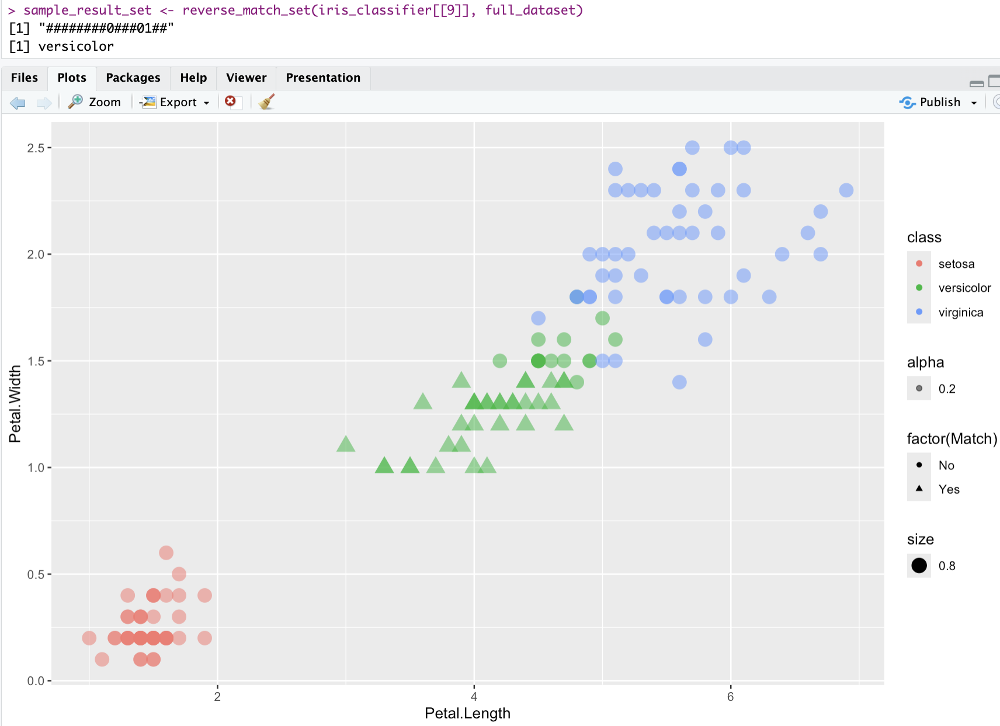
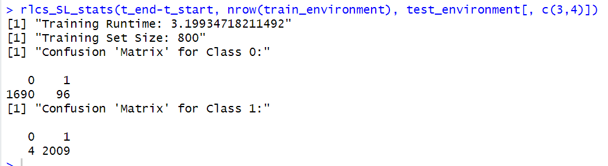
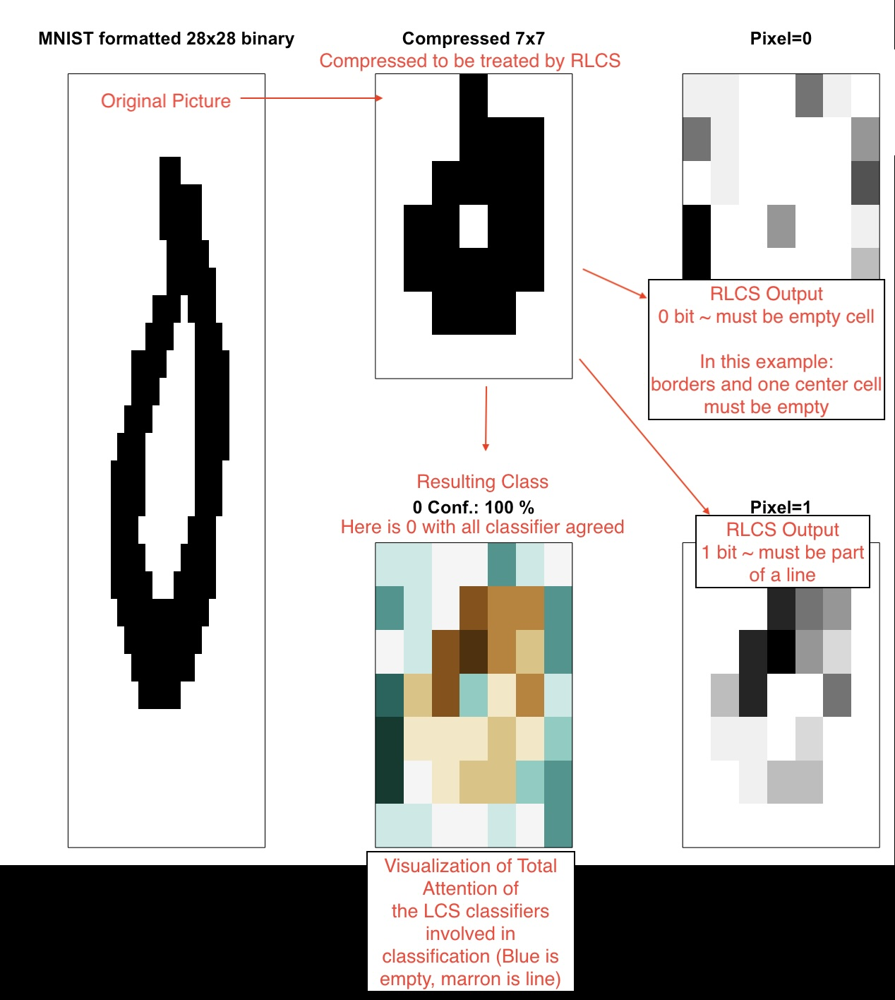
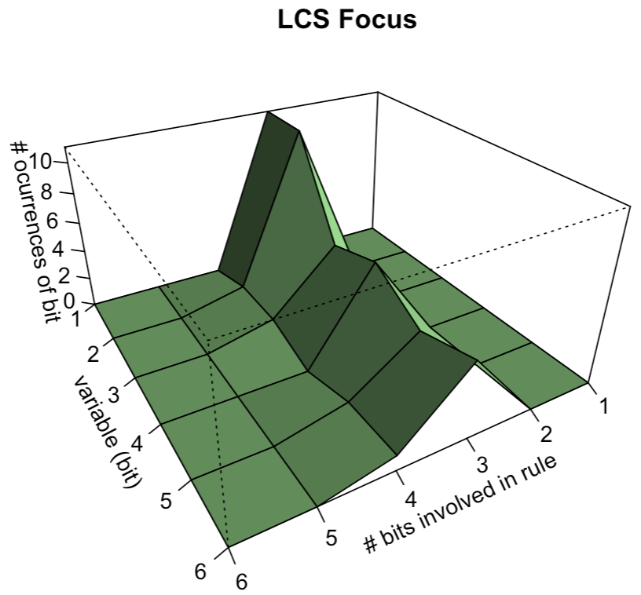
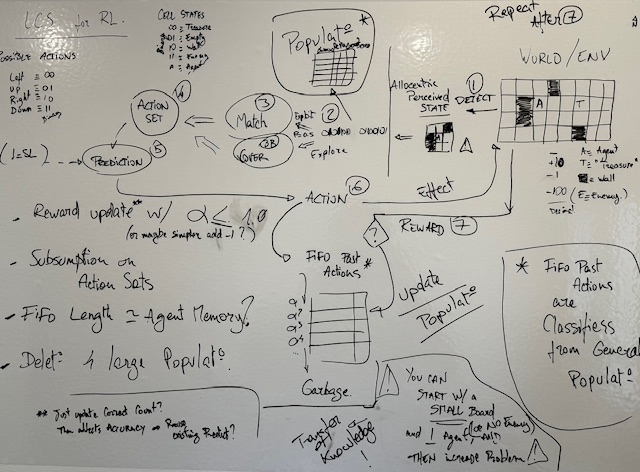
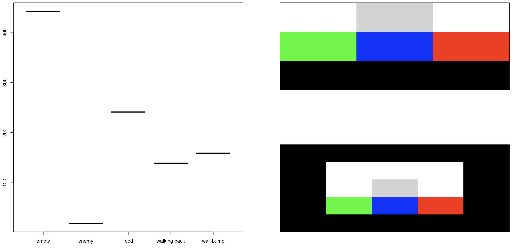
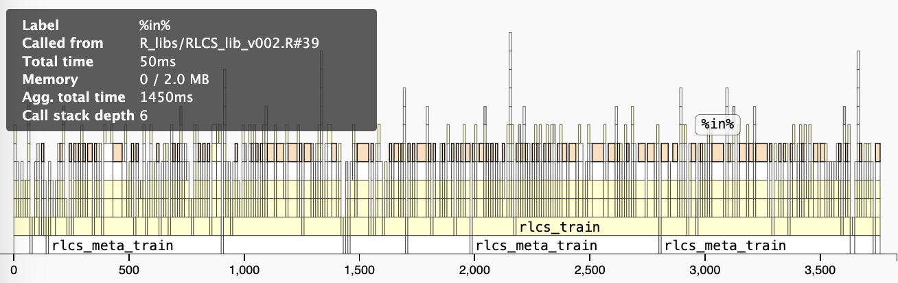

RLCS: An Introduction
Interpretable, Symbolic Machine Learning
An issue with “AI”: explainability
Let’s call it Machine Learning. As of today:
Mostly Neural networks
And mostly, that means it’s all black boxes
There are ways around that. (e.g. Trees and other “open book” algorithms…)
John H. Holland proposed an algorithm with the Cognitive System One program (1976). Later, people came up with variations… Today we focus on Michigan-style LCS.
Learning rules as model(s)
if A & NOT(B) then Class=X
if D then Class=Y
“Human-readable”, “interpretable”, good for:
Mitigating bias(es) (in training data, at least)
Increased trust (justifying decisions)
Learning about the data (data mining), better decisions, regulatory compliance, ethical/legal matters, possible adversarial attack robustness…
A new R package
Have you ever found something that no one else has done?
A preview
Can you guess the “rule”?
Did you guess right?
> demo_params <- RLCS_hyperparameters(n_epochs = 280, deletion_trigger = 40, deletion_threshold = 0.9)
> rlcs_model1 <- rlcs_train_sl(demo_env1, demo_params, NULL, F)
[1] "Epoch: 40 Progress Exposure: 1280 Classifiers Count: 14"
[1] "Epoch: 80 Progress Exposure: 2560 Classifiers Count: 8"
[1] "Epoch: 120 Progress Exposure: 3840 Classifiers Count: 2"
[1] "Epoch: 160 Progress Exposure: 5120 Classifiers Count: 2"
[1] "Epoch: 200 Progress Exposure: 6400 Classifiers Count: 2"
[1] "Epoch: 240 Progress Exposure: 7680 Classifiers Count: 2"
[1] "Epoch: 280 Progress Exposure: 8960 Classifiers Count: 2"The model: the Ternary Alphabet
A Population of Classifiers is produced.
This is how to read that output model:
Each classifier includes a rule that encodes a match for states that can be read as:
| 0 | No/False/not present |
| 1 | Yes/True/present |
| # | “Don’t care” |
RLCS PRE-requisite
The input
Before we dive in:
Neural Networks accept numerical vectors for inputs.
Other algorithms accept factors, or mixed-input.
Well…
The RLCS package (specific/current implementation) expects binary strings for its input.
The input: Binary encoding
NOTE: This is NOT part of the LCS algorithm per-se.
With the input data, we will encode the data as:
| 0 | No/False/not present/0 |
| 1 | Yes/True/present/1 |
A “state” of the environment will then be encoded as a string of zeros and ones.
Binary input?! DO NOT WORRY
Any data point can be encoded into binary strings.
rlcs_rosetta_stone()
A (simplistic) function is actually provided to make this a bit more transparent. Not necessarily the best approach! Just an “illustration”, really.
(for numerical data, for now… work-in-progress :))
Binary input: Example
Rosetta Stone “binning” for numerical variables (2 bits explanation)
Binary input: Example
Rosetta Stone: 16 values, 4-bits, “double-quartiles” w/ Gray-binary encoding, per variable:
> head(iris, n=3)
Sepal.Length Sepal.Width Petal.Length Petal.Width Species
1 5.1 3.5 1.4 0.2 setosa
2 4.9 3.0 1.4 0.2 setosa
3 4.7 3.2 1.3 0.2 setosa
> rlcs_iris <- rlcs_rosetta_stone(iris, class_col=5) ## NOT part of LCS
> head(rlcs_iris, n=3)
rlcs_Sepal.Length rlcs_Sepal.Width rlcs_Petal.Length rlcs_Petal.Width class state
1 0010 1111 0011 0010 setosa 0010111100110010
2 0011 0101 0011 0010 setosa 0011010100110010
3 0000 1101 0000 0010 setosa 0000110100000010Note: with some data loss :S
Interlude: Get the package
Download and install RLCS
To get the package from GitHub:
Run your first tests of RLCS
Learning Classifier System: Algorithm
Keywords
Key concepts
1 - Generating a rule
The key: “#” means “I don’t care”
Covering a state with a probability of “#” values means making a rule that matches the input state and class/action.
Something that could match other (partially) similar input:
2 - Matching
- When you see a new environment instance that does not match any rule in your population yet -> generate a new rule.
If one(+) rule(s) in your population matches your new instance state -> increase the match count of the corresponding classifier.
If one(+) rule(s) in your population matches your new instance state && class/action –> increase the correct count.
3 - Rule Discovery
After a few epochs of exposing the LCS to your environment, you will have a few rules that match correctly a given instance, the “correct” set.
Match and Correct count are indicators of how good each rule is. But are there other better possibilities?
Take all the correct set, and apply a Genetic Algorithm to that set, to generate new rules!
3 - Rule Discovery (GA)

4 - Population Size
Matching must go through all the population every time an environment instance is presented to the LCS.
\[O(match) = epochs*N(environment)*N(population)\]
Where \(N()\) means “size of”.
\[e.g. 1.000 * 5.000 * 1.000 = 5.000.000.000\]
One option: Reduce the population of rules.
4 - Population Size
Subsumption: A “perfect” classifier that has 100% accuracy might be simpler (more # characters) than other classifiers in the population with same classification. Keep only the best classifiers. (Implemented: Accuracy-based subsumption)
Compaction: You can keep all classifiers that have e.g. 60%+ accuracy after a number of epochs.
Deletion: But you can also cap the population size, keeping only e.g. 10.000 best classifiers.
5 - Prediction
Imagine a new sample/instance, never seen before. (Test environment)
Prediction is about returning the match set for that new instance.
The prediction will be the majority (possibly weighted by numerosity, accuracy…) of the proposed class/action. That’s it!
It also means, this is natively an ensemble learning algorithm.
6 - Other uses!
Why talk about “environment” and “action”? This comes from the world of Reinforcement Learning.
And because one can read the rules, and “understand” the population, you can also use the LCS to interpret the results and thus do data mining!
All with the same algorithm!
Demo Time
Iris
Iris
visualizing one classifier - iris
Images Classifier
Images Classifier
Data Mining
Given that the rules are “expressive”, sometimes you can ask the LCS to find rules that appear in your data:
Not necessarily to classify future samples
To identify what is important for different classes of your data
REAL WORLD anecdote: inventory of 10K rows with 20 columns, each duly binary encoded. I learnt something about my inventory!
Epistasis
LCS can somehow recognize how two different parts interact. Aptly… The term comes from of genetics (genes modified by other genes…). (e.g. XOR…)
RL, TOO!
First self-brain-storm on RL with LCS
RL Video
Some R code
An R package
A package to implement a simple version of the Learning Classifier System algorithm:
Binary Alphabet, tournament/one-point crossover GA, accuracy based, Michigan-style LCS
With examples, demonstrating the implementation for:
Data Mining
Supervised Learning
Reinforcement Learning
How did I approach the thing?
Lists. Lists, everywhere. Which might have been a bad idea… (data.table?)
from there, lapply() & al. is then my best friend
“Start small, grow fast” (“fast”… for a hobby, that is)
then clean it (then clean it some more)
Finally publishing on GitHub
Next steps? CRAN
Examples
Before
lcs_res <- rlcs_meta_train(train_environment,
1, ## Warmup with just one epoch
wildcard_prob,
rd_trigger,
parents_selection_mode,
mutation_probability,
tournament_pressure,
deletion_trigger) ## Deletion won't be triggeredToo many parameters! (Uncle Bob wouldn’t like it)
Examples
After, using an object (reference class, “R5”, in this case)
Examples
Or, you know…
source("run_params/datamining_examples_recommended_hyperparameters_v001.R")
basic_hyperparameters <- RLCS_hyperparameters(
wildcard_prob = wildcard_prob,
## defaults for rd_trigger, mutation_probability,
## parents_selection_mode && tournament_pressure
n_epochs = n_epochs,
deletion_trigger = deletion_trigger,
deletion_threshold = deletion_threshold
)
## It makes it more readable here:
example_lcs <- rlcs_train(train_environment, basic_hyperparameters)Examples
Before
inc_match_count <- function(M_pop) { ## All versions
lapply(M_pop, \(x) {
x$match_count <- x$match_count + 1
x
})
}
inc_correct_count <- function(C_pop) { ## SL Specific
lapply(C_pop, \(x) {
x$correct_count <- x$correct_count + 1
x
})
}
inc_action_count <- function(A_pop) { ## RL Specific
lapply(A_pop, \(x) {
x$action_count <- x$action_count + 1
x
})
}Examples
After, using a function factory
## Function factory to increase parameter counts
inc_param_count <- function(param) {
param <- as.name(param)
function(pop) {
lapply(pop, \(x) {
x[[param]] <- x[[param]] + 1
x
})
}
}
inc_match_count <- inc_param_count("match_count")
inc_correct_count <- inc_param_count("correct_count")
inc_action_count <- inc_param_count("action_count")Examples
Before
## Support function for human-compatible printing:
make_pop_printable <- function(classifier) {
df <- plyr::rbind.fill(lapply(1:length(classifier), \(i) {
t_c <- classifier[[i]]
data.frame(id = t_c$id,
condition = t_c$condition_string,
action = t_c$action,
match_count = t_c$match_count,
correct_count = t_c$correct_count,
accuracy = t_c$accuracy,
numerosity = t_c$numerosity,
first_seen = t_c$first_seen)
}))
df[order(df$accuracy, df$numerosity, decreasing = T),]
}(Even the parameter name is wrong…)
Examples
After - S3 object
print.rlcs_population <- function(x, ...) {
if(length(x) == 0) return(NULL)
x <- .lcs_best_sort_sl(x)
x <- unclass(x)
l <- lapply(1:length(x), \(i) {
t_c <- x[[i]]
data.frame(condition = t_c$condition_string, action = t_c$action,
match_count = t_c$match_count, correct_count = t_c$correct_count,
accuracy = t_c$accuracy, numerosity = t_c$numerosity,
reward = t_c$total_reward, first_seen = t_c$first_seen)
})
# plyr::rbind.fill(l) ## Faster, but adds plyr dependency :(
## Slower, but no dependency:
df <- data.frame(matrix(unlist(l), nrow=length(l), byrow=TRUE))
names(df) <- c("condition", "action", "match_count", "correct_count", "accuracy", "numerosity", "reward", "first_seeen")
df
}Then again
This is all work in progress.
I plan to make it into a CRAN Package.
So: document more, write more tests, reorganize functions…
More Resources
THE BEST INTRO to the LCS Algorithm out-there (hands down!) (12’ video)
And for my first RevealJS Quarto, this blog entry (not mine)
Probably quite a few more, including the two in the first picture.
Follow the link at the bottom for more info!
Thank you!
Supplementary
Why nobody has done it yet?
It’s not fast
There are many sequential steps, rather unavoidable ones at that
Not ideal to compete with a world of GPUs and parallel processing (yet ;))
It’s “complex”
Or so does the Wikipedia entry say…
When it comes to “alphabets”, it does get messy, I’ll admit
Execution Speed
For instance, this is a “slow” algorithm. Option: Rcpp for Matching
profviz
Parallel Computing
Parallel computing? %dopar%, mirai were tested (it all works, but…)
- vertical and horizontal partitioning
Break data set (vertical). Two options
instances subsets (reduce population covered per thread/core)
Substrings of states (reduce search space)
both are “risky”
run fewer iterations (epochs) on full dataset, but on several cores in parallel
Parallel Computing
Depending on the dataset, it can be done… Or not…

Reinforcement Learning Conundrum
We’ve seen it works, but… How do you package an RL algorithm?
You must make assumptions about the “world” your agent is going to interact with. This makes things complicated:
What to include inside the package? What not?
What to expose from the package? What not?
And a few other such questions slow me down a bit…